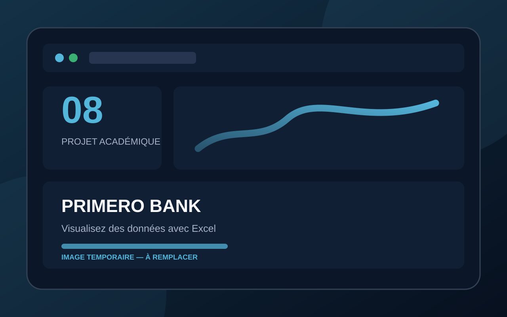

Étude de cas
Primero Bank — Visualisez des données avec Excel
Analyse de l’attrition client et visualisations accessibles pour identifier les profils à risque.

Présentation et contexte
Primero Bank faisait face à de nombreux départs. La responsable commerciale avait besoin de comprendre les facteurs associés avant de préparer un plan d’action.
Objectif
Comparer les clients partis et actifs afin d’identifier les profils susceptibles de quitter la banque.
Besoin ou problème
La banque ne disposait pas d’une analyse claire des caractéristiques des clients quittant l’établissement.
Résultat attendu
Un rapport d’analyse et une présentation accessible destinée à une interlocutrice non technique.
Mon rôle et mes réalisations
J’ai exploré les données, créé les tableaux croisés, identifié les variables pertinentes et conçu les visualisations.
Principales fonctionnalités
- Profils clients
- TCD
- Comparaison actifs / partis
- Visualisations accessibles
- Contrastes
- Synthèse direction
Outils et technologies
Compétences mobilisées
- Analyse exploratoire
- Segmentation
- Statistiques
- Dataviz
- Accessibilité
- Vulgarisation
Savoir-être exploités
- Empathie utilisateur
- Clarté
- Rigueur
- Communication
Livrables principaux
Rapport d’analyse PDF et présentation de 15 diapositives maximum.